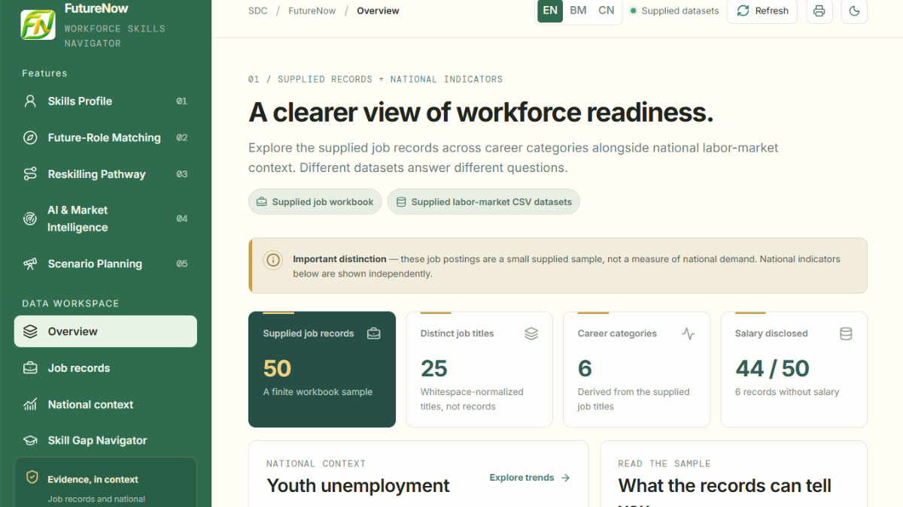

WEB DEVELOPMENT · HACKATHON 2026
FutureNow
An AI-Powered Career Development Platform
FutureNow is a career development platform designed to help Malaysian graduates and working adults understand their skills, explore suitable career opportunities, and identify areas for improvement in an AI-driven job market.

Project Overview
FutureNow focuses on helping users prepare for changes in the job market by connecting their existing skills with potential career opportunities and relevant reskilling paths.
Project Objectives
- Help users explore suitable career opportunities.
- Identify skill gaps between users and selected job roles.
- Recommend relevant reskilling opportunities.
- Provide career information to support better decisions.
Key Features
- Skills Profile: Users can provide their skills and background.
- Career Matching: Explore job roles based on the user's profile.
- Skill Gap Analysis: Understand which skills may need improvement.
- Reskilling Recommendations: Explore learning opportunities to develop relevant skills.
- Job Market Information: View job-related information with source references.
My Contributions
As the sole developer of FutureNow, I independently handled the project from planning to implementation. My responsibilities included:
- Project planning and requirement analysis.
- Frontend development using React and TypeScript.
- Backend development using Node.js and Express.js.
- Data preparation and integration.
- Designing career matching and skill gap analysis features.
- Project documentation and hackathon submission preparation.